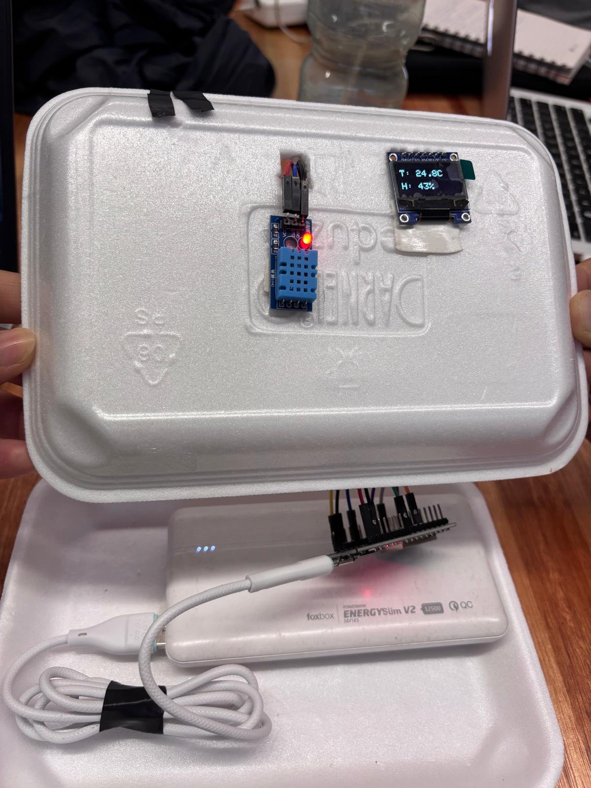
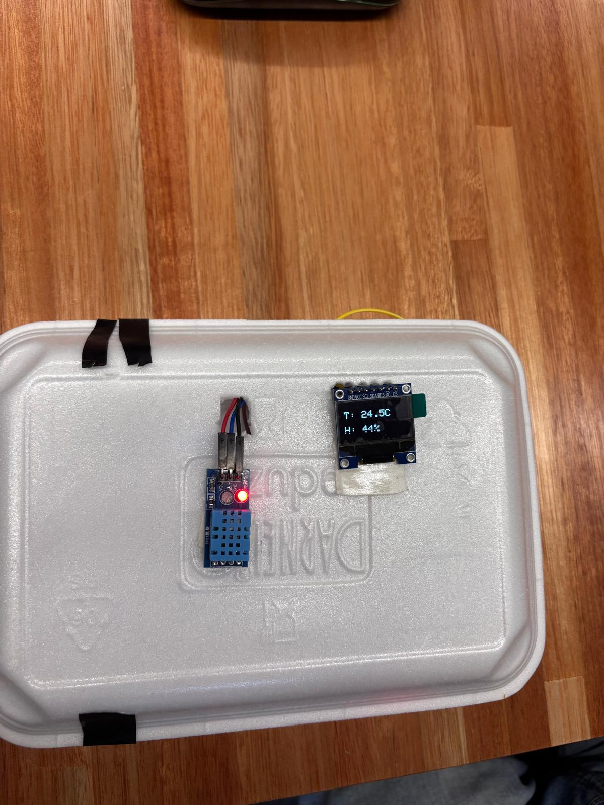
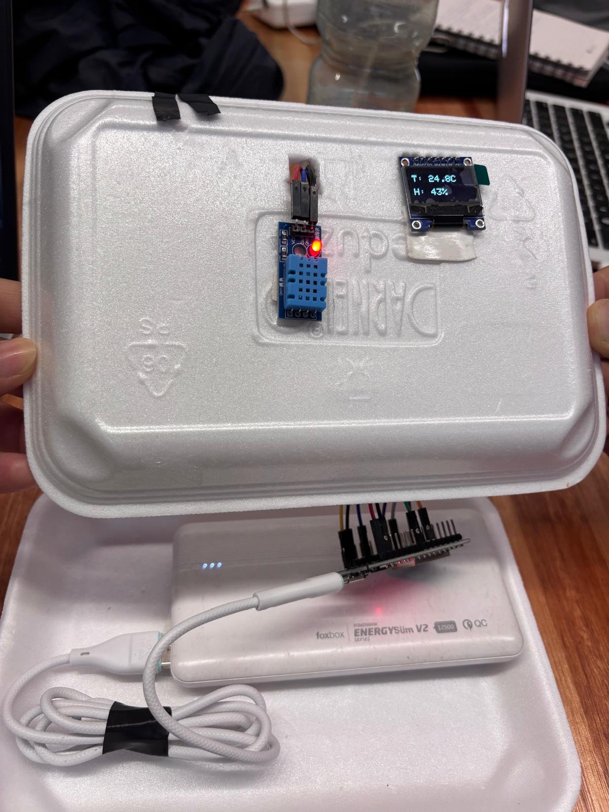
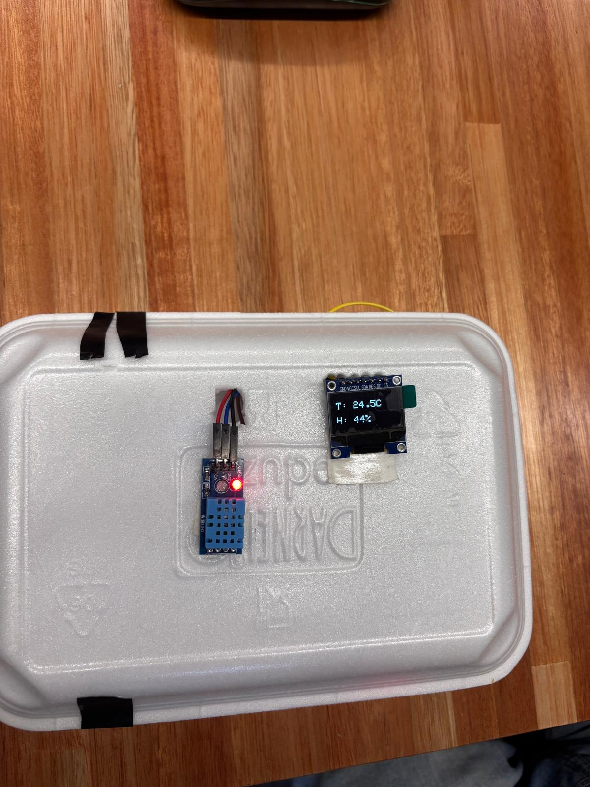

El proyecto tiene como objetivo desarrollar un sistema de monitoreo de temperatura para cuartos de servidores utilizando una placa ESP32 conectada a un sensor DHT11. El sistema permite vigilar en tiempo real la temperatura ambiente y enviar alertas automáticas a través de Telegram cuando se supera un umbral crítico. Con esto se busca prevenir el sobrecalentamiento de los equipos y mejorar la seguridad y el rendimiento de los servidores.
Objetivo general: Diseñar e implementar un sistema automatizado de monitoreo de temperatura con notificaciones instantáneas mediante Telegram.
Objetivos específicos:
Se utilizó un ESP32 como microcontrolador principal, un sensor DHT11 para medir la temperatura, una pantalla OLED de 0.96 pulgadas para mostrar los valores en tiempo real, cables y una conexión Wi-Fi para el envío de alertas mediante la API de Telegram.
El entorno de desarrollo utilizado fue Arduino IDE, programando en lenguaje C++. Se emplearon las siguientes librerías:
El ESP32 se conecta automáticamente a la red Wi-Fi configurada. El sensor DHT11 mide la temperatura ambiente y envía los valores al microcontrolador. La temperatura se muestra en la pantalla OLED en tiempo real. Si la temperatura supera el umbral definido, el ESP32 envía un mensaje de alerta a través del bot de Telegram. El sistema realiza una nueva lectura cada diez segundos, verificando si se mantiene la condición de alerta.
Comportamiento del sistema de alertas según la temperatura:
#include <WiFi.h>
#include <HTTPClient.h>
#include <SPI.h>
#include <Adafruit_GFX.h>
#include <Adafruit_SSD1306.h>
#include "DHT.h"
// ---------- CONFIGURACIÓN WIFI ----------
const char* ssid = "Ceibal-2.4GHz";
const char* password = "";
// ---------- TELEGRAM ----------
String botToken = "8421682878:AAEq2uzHKsqD8j_M9_9O2wNVxgdP-vrIeP0";
String chatID = "6711269098";
// ---------- SENSOR DHT ----------
#define DHTPIN 4
#define DHTTYPE DHT11
DHT dht(DHTPIN, DHTTYPE);
// ---------- CONFIGURACION OLED SPI (7 pines) ----------
#define SCREEN_WIDTH 128
#define SCREEN_HEIGHT 64
#define OLED_MOSI 23
#define OLED_CLK 18
#define OLED_DC 25
#define OLED_CS 32
#define OLED_RESET 21
Adafruit_SSD1306 display(SCREEN_WIDTH, SCREEN_HEIGHT, &SPI, OLED_DC, OLED_RESET, OLED_CS);
// ---------- ALERTAS ----------
float tempNormalMin = 19.0;
float tempNormalMax = 21.0;
unsigned long intervaloNormal = 30UL * 60UL * 1000UL; // 30 min
unsigned long intervaloAlerta = 2UL * 60UL * 1000UL; // 2 min
unsigned long ultimoEnvio = 0;
bool enAlerta = false;
// ---------- FUNCIONES ----------
void conectarWifi() {
Serial.print("Conectando a WiFi");
WiFi.begin(ssid, password);
while (WiFi.status() != WL_CONNECTED) {
delay(500);
Serial.print(".");
}
Serial.println("\nWiFi conectado");
Serial.print("IP: ");
Serial.println(WiFi.localIP());
}
void enviarTelegram(String mensaje) {
if (WiFi.status() != WL_CONNECTED) return;
HTTPClient http;
mensaje.replace(" ", "%20");
String url = "https://api.telegram.org/bot" + botToken +
"/sendMessage?chat_id=" + chatID + "&text=" + mensaje;
http.begin(url);
http.GET();
http.end();
}
// ---------- SETUP ----------
void setup() {
Serial.begin(115200);
delay(500);
if(!display.begin(SSD1306_SWITCHCAPVCC)) {
Serial.println("Error iniciando OLED");
while(true);
}
display.clearDisplay();
display.setTextSize(2);
display.setTextColor(SSD1306_WHITE);
display.setCursor(0,10);
display.println("Iniciando...");
display.display();
delay(1500);
dht.begin();
conectarWifi();
delay(1000);
enviarTelegram("Sistema de monitoreo iniciado");
}
// ---------- LOOP PRINCIPAL ----------
void loop() {
float temp = dht.readTemperature();
float hum = dht.readHumidity();
if (isnan(temp)) {
Serial.println("Error de lectura del DHT11");
delay(5000);
return;
}
unsigned long ahora = millis();
bool fueraDeRango = (temp > tempNormalMax || temp < tempNormalMin);
if (fueraDeRango && !enAlerta) {
enviarTelegram("ALERTA: Temp fuera de rango (" + String(temp, 1) + "°C)");
enAlerta = true;
ultimoEnvio = ahora;
}
else if (fueraDeRango && enAlerta && (ahora - ultimoEnvio >= intervaloAlerta)) {
enviarTelegram("Temp sigue fuera de rango: " + String(temp, 1) + "°C");
ultimoEnvio = ahora;
}
else if (!fueraDeRango && enAlerta) {
enviarTelegram("Temp normalizada (" + String(temp, 1) + "°C)");
enAlerta = false;
ultimoEnvio = ahora;
}
else if (!fueraDeRango && !enAlerta && (ahora - ultimoEnvio >= intervaloNormal)) {
enviarTelegram("Temp: " + String(temp, 1) + "°C | Hum: " + String(hum, 0) + "%");
ultimoEnvio = ahora;
}
Serial.printf("Temp: %.1f°C | Hum: %.0f%% | Estado: %s\n",
temp, hum, enAlerta ? "ALERTA" : "NORMAL");
display.clearDisplay();
display.setTextSize(2);
display.setTextColor(SSD1306_WHITE);
display.setCursor(0,10);
display.print("T: ");
display.print(temp, 1);
display.println("C");
display.setCursor(0,40);
display.print("H: ");
display.print(hum, 0);
display.println("%");
display.display();
delay(2000);
}
El diseño mecánico del proyecto consiste en cómo colocamos y acomodamos las partes físicas del sistema: el ESP32, el sensor de temperatura DHT11 y la pantalla OLED. La idea fue ordenarlos de una manera práctica y segura.
El sensor se colocó en una zona donde pueda medir bien la temperatura del ambiente. La pantalla quedó en la parte frontal para poder ver los datos fácilmente. El ESP32 se ubicó en un lugar protegido, pero con acceso para conectarlo y revisarlo si es necesario.
Además, se organizaron los cables para que no queden sueltos ni se desconecten. Todo el conjunto está pensado para que sea fácil de instalar dentro del cuarto de servidores y funcione sin problemas.
 





.png)


Un data center es una instalación diseñada para albergar sistemas informáticos y componentes asociados, como servidores, sistemas de almacenamiento y redes de comunicación. Su función principal es procesar, almacenar y distribuir grandes volúmenes de datos, garantizando la disponibilidad y el funcionamiento continuo de los servicios digitales.
Entre sus componentes principales se incluyen los servidores, los sistemas de almacenamiento, los equipos de red (como routers y switches) y los sistemas de respaldo energético, como generadores y UPS. También cuentan con sistemas de refrigeración para mantener la temperatura adecuada y evitar el sobrecalentamiento del hardware.
La seguridad es un aspecto esencial en los data centers. Se implementan medidas tanto físicas (control de acceso, videovigilancia, detección de incendios) como lógicas (firewalls, cifrado, control de usuarios y copias de seguridad) para proteger la información y garantizar la continuidad del servicio ante fallos o ataques.
En resumen, los data centers son el corazón de la infraestructura digital moderna, ya que permiten el funcionamiento de internet, servicios en la nube, redes sociales y aplicaciones empresariales críticas.
La configuración de un bot de Telegram es un proceso sencillo que puede realizarse en pocos pasos.
Primero, se debe crear el bot desde la aplicación de Telegram utilizando el usuario @BotFather.
Para ello, se envía el comando /newbot y se siguen las instrucciones, proporcionando un nombre y un
username (que debe terminar en “bot”). Al finalizar, BotFather entrega un token, una
clave única que permitirá conectar el bot con un programa o aplicación externa.
Luego, se utiliza ese token en el código —por ejemplo, en Python con la librería
python-telegram-bot o en Node.js con node-telegram-bot-api— para establecer la
comunicación con el bot. De esta forma, se pueden enviar y recibir mensajes, responder comandos o ejecutar
distintas funciones programadas.
Una vez configurado, se puede buscar el bot en Telegram e iniciar la conversación para probar su funcionamiento. Además, según la necesidad del proyecto, el bot puede operar mediante modo polling (consultando periódicamente a Telegram por nuevos mensajes) o modo webhook (recibiendo los mensajes automáticamente desde una URL configurada en un servidor).